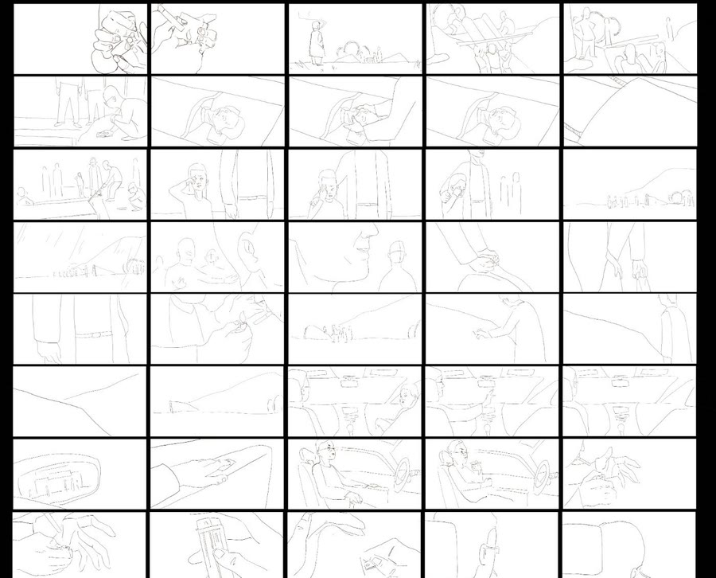
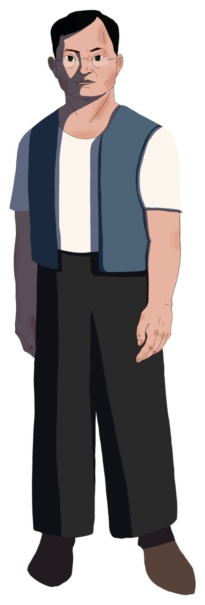
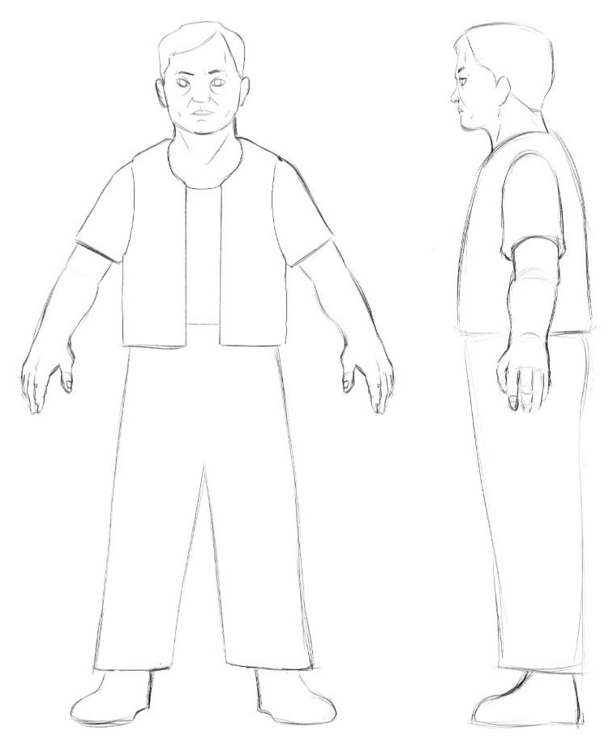
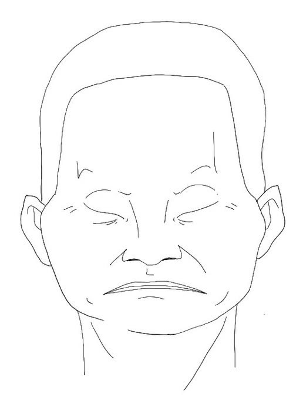
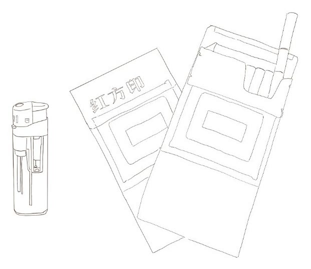

Father父亲
- What
- Capstone short film, hand-drawn 2D, about 4 min 30 s
- My part
- Writing, direction and every drawing on this page
- Where it is
- Pre-production. The first minute is boarded as an animatic.
- Year
- 2026, ongoing
“My mother died. Am I not allowed to cry?”
My dad said that, weeks after we buried my grandmother. Father is a four-and-a-half-minute hand-drawn 2D short about how he got to that sentence.
At the burial, in the fog, the rule is no crying, or she can't leave in peace. My dad is busy all day: directing the coffin down, climbing down into the grave to straighten his mother's head, putting a hand on my sister's back when she cries. He doesn't cry.
Weeks later, on a bright sunny morning, he drops my sister at school. Alone in the car he tries to light a cigarette. The lighter is empty. He puts the cigarette away. There is nothing left to do. He cries. We only see his back.
Then black, and he says that sentence. He never once told his mother he loved her. This is the one time it slips out.
Story


The father





The family





Next project: Chasing the Star